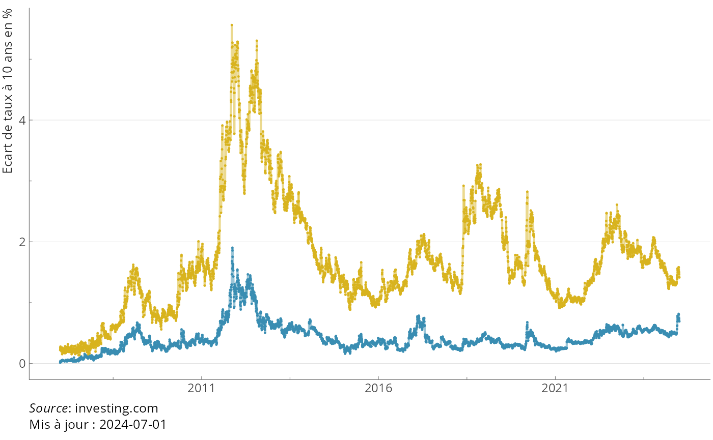
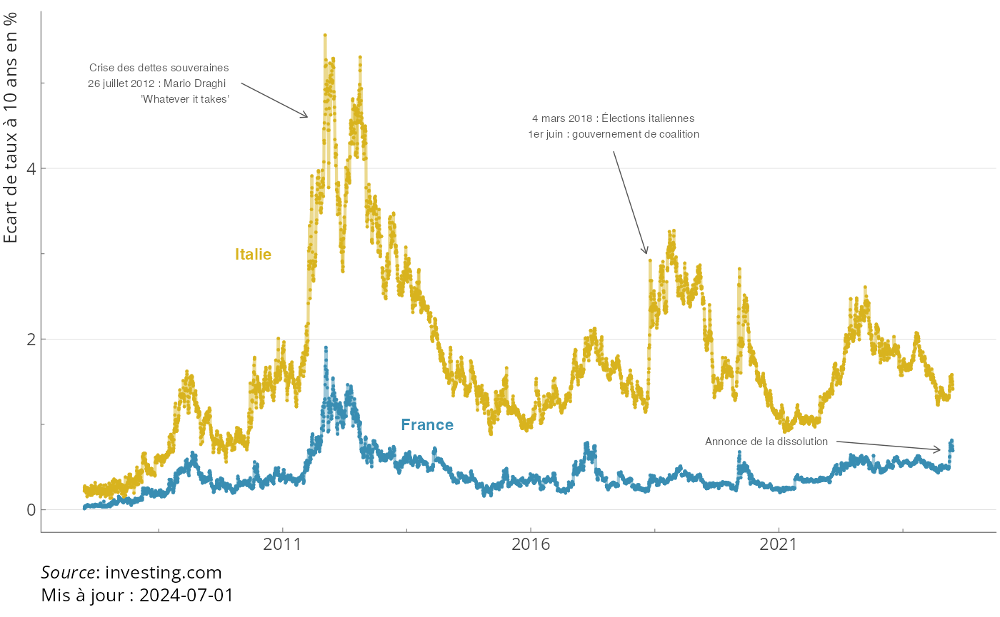
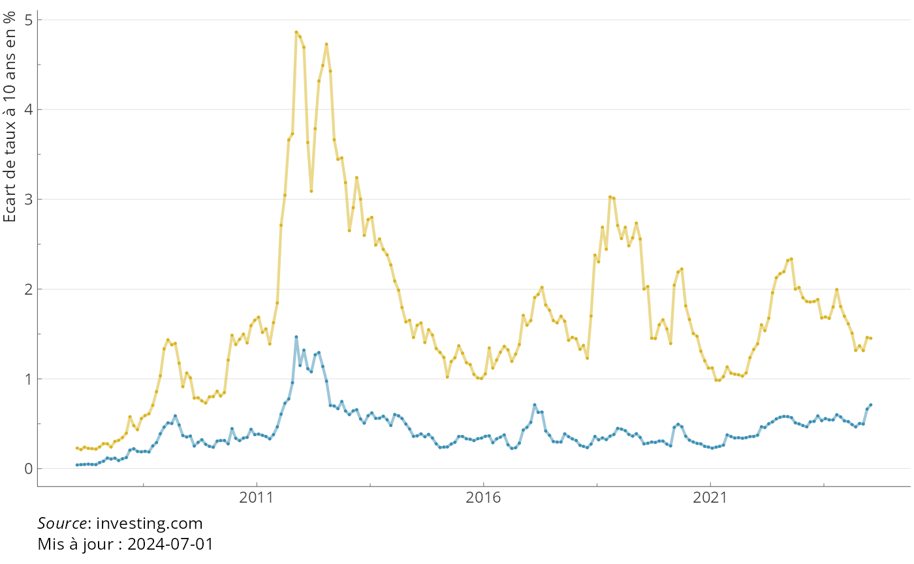
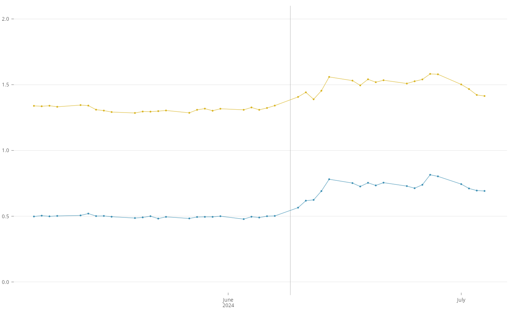
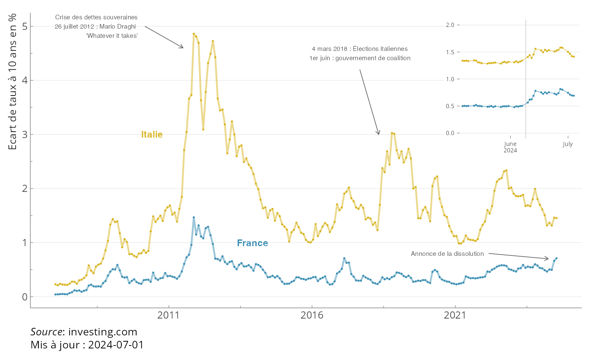

Recommandations pour les graphiques OFCE
graphiques.RmdDans cette (longue) vignette, les recommandations pour les graphiques sont détaillées.
On commence par des éléments généraux (les 3 méthodes), puis des recommandations (une charte graphique) pour les diférents types de graphiques (séries temporelles, catégories, etc) qui sont les plus fréquents.
Les trois méthodes
Pour les graphiques on dispose de plusieurs options : ggplot2, copier-coller, fichier image.
ggplot2
La façon préférée de faire un graphique est ggplot2. Elle est la plus flexible, permet d’avoir une source unique, peut être facilement modifiée (uniformisation, traduction, correction, raffinements) et s’intègre parfaitement en html et en pdf.
Avec un faible coût on peut rendre le graphique interactif (avec plotly ou ggiraph).
Un graphique ggplot doit contenir une couche (layer)
theme_ofce() et limiter au maximum les définitions de
taille (par exemple de police de caractère). Ces définitions doivent
être faites de façon globale pour assurer l’homogénéité. Il est
important de ne pas définir la taille de la figure, ça risque de
produire des images avec des caractères trop petits.
Pour changer les dimensions d’un graphique, il faut utiliser1
#| fig-asp : x ou x est le ratio entre la
hauteur et la longueur. 0.61 est la valeur par défaut et correspond au
nombre d’or soit entre 16/9 et 16/10. Pour des graphiques particuliers
(par exemple deux graphiques empilés ou une carte) on peut mettre 1
(format carré) ou 1.4 quand on veut prendre toute la page A4.
Le code d’un graphique ggplot2 :
#| label: fig-tauxapp
#| fig-cap: Taux de taxation apparent sur le patrimoine des ménages
#| fig-asp: 0.61
# pas besoin d'en mettre plus, echo, message, warning sont déjà définis
# les données sont dans excel -- elles pourraient venir de R ou d'ailleurs
data <- readxl::read_xlsx("analyses/Tables/patrimoine menages.v2.xlsx", sheet = "tapp")
names(data) <- c("date", "vn", "pib")
data <- data |> mutate(date = lubridate::ym(str_c(date, "-01"))) |>
pivot_longer(cols = c(vn, pib)) |>
mutate(name = factor(name, c("vn", "pib"),
c("En % de la valeur nette", "En % du PIB")))
# un ggplot et ses différentes couches
ggplot(data) +
aes(x = date, y = value, group = name, col = name, fill = name) +
geom_line(linewidth = 1) +
geom_point(shape = 21, col = "white", size = 2) +
# important utiliser le theme_ofce pour uniformiser l'aspect des graphiques
theme_ofce(legend.position = "bottom") +
# scale date est important lorsqu'on présente des données temporelles
# il faut penser à convertir les dates en dates (as.Date() ou lubridate::ymd() et consorts)
# c'est important même si les dates ne sont que des années
# ca permet aussi de mélanger facilement des fréquences différentes
scale_x_date(date_breaks = "2 years", date_labels = "%Y",
date_minor_breaks = "year") +
# le choix des couleurs est tjrs délicat, Paul Malliet est un maître en la matière
# uniformiser ses choix de couleurs le long d'un document c'est bien
# donner une signification à ses couleurs c'est mieux
# quand en plus c'est harmonieux, c'est PM (plus que mieux ou Paul Malliet)
PrettyCols::scale_color_pretty_d(name = NULL, palette = "Summer") +
PrettyCols::scale_fill_pretty_d(name = NULL, palette = "Summer") +
ylab("%") + xlab(NULL) +
# les sources -- notez qu'on ne met pas de titre au graphique
# (voir la section références croisées)
labs(caption =
"La fiscalité sur le patrimoine est composée ici de la taxe foncière payée par les ménages, <br>
des droits d'enregistrement sur les transactions immobilières, des droits de mutation sur les successions et les donations et de l'Impôt sur la Fortune Immobilière (ex-ISF)<br>
*Sources* : Insee, calculs OFCE")Copier-coller
On peut copier coller un graphique (de word, d’excel, d’ailleurs) dans le mode visuel de RStudio. Ça marche mais c’est pas le mieux. Quand on copie colle, on fait quelque chose qui ressemble à l’option qui suit.
Image au format png/jpeg/jpg/svg
On peut enregistrer une image (au format que l’on veut,
quarto accepte pas mal d’options, dont les plus courantes)
et l’insérer dans le texte. Il y a deux façon de faire soit en
markdown (dans le qmd, comme un lien ou autre chose), soit
en utilisant include_graphics. L’intérêt par rapport au
copier-coller est que si on change le fichier qui contient l’image, à
chaque render du document, la bonne (la dernière version) image
sera utilisée. Si on utilise des images venant de eviews 💀
ou stata 😵, c’est la meilleure méthode.
Le répertoire est toujours relatif.
Jamais de chemin absolu comme
“c:/user/machin/montravail/monrepo/monimage.png” parce que
ça ne marchera pas sur un autre ordinateur et en plus
github ne copiera pas l’image) et par celui qui contient le
.qmd. Il est toujours possible de mettre les images dans un
sous dossier.
Plus c’est simple et clair, mieux c’est (i.e. gardez les noms courts,
explicites, pas de majuscules, bien rangés, conservateurs dans
l’utilisation des caractères (pas d’accents, pas de blancs, pas
de symboles spéciaux). Donc donnees/img.png ou
donnees/graphique 1a5.png ne sont pas des bons noms. Mais
figures/revenu.png ou figures/pib_par_tete.png
sont mieux.
#| label fig-pib2008_2024
#| fig-cap: PIB entre 2008 et 2024
knitr::include_graphics("pib2008_2024.png")Notez la cohérence des id, nom et titre.
Les types de graphiques
Séries temporelles
données
Pour les séries temporelles, il y a deux recommandations pour les données :
utilisez le format long pour le graphique. Il peut être plus simple pour calculer des taux de croissance ou des ratios de passer en format large, mais c’est mieux de passer en format long pour la partie graphique, avec une ou plusieurs colonnes pour différencier les lignes. Cela permettra d’associer une couleur à chaque série et une facette à chque pays par exemple.
le champ décrivant les dates doit être en type
date. ce n’est pas toujours évident quand les séries sont à fréquence annuelle, mais c’est très utile pour mélanger des séries de fréquence irrégulière, pour homogénéiser l’aspect des axes de dates ert mieux maîtriser le formatage des dates. Pour convertir une date en date, soit elle est au format charactere et de type “2022-12-01” et la fonctionbase::as.Date()fonctionne très bien. Sinon, pur les autres cas, le package lubridate (formation R niv. 1) est très pratique et dispose de plein de fonctions permettant d’absorber beaucoup de cas (les fonctions sont par exemplelubridate::ymdlubridate::dmylubridate::myetc…).
dates <- c(2023, 2024, 2025)
as.Date(as.character(dates), format = "%Y")
#> [1] "2023-07-07" "2024-07-07" "2025-07-07"
dates <- c("1/2023", "2/2024", "3/2025")
lubridate::my(dates)
#> [1] "2023-01-01" "2024-02-01" "2025-03-01"Prenons l’exemple du graphiques sur les spreads (legislatives2024, Blot Gerrolf Plane). Les données sont égénrées par un scrapping sur investing.com (en attendant une solution API sur une banque de données bien faite). Les données se présentent sous la forme.
load("data/spreads.rds")
spreads
#> # A tibble: 10,117 × 3
#> date pays taux
#> <date> <chr> <dbl>
#> 1 2007-01-02 spreadfra 0.0130
#> 2 2007-01-03 spreadfra 0.0360
#> 3 2007-01-04 spreadfra 0.0280
#> 4 2007-01-05 spreadfra 0.0190
#> 5 2007-01-08 spreadfra 0.0440
#> 6 2007-01-09 spreadfra 0.0430
#> 7 2007-01-10 spreadfra 0.0290
#> 8 2007-01-11 spreadfra 0.0370
#> 9 2007-01-12 spreadfra 0.0340
#> 10 2007-01-15 spreadfra 0.0380
#> # ℹ 10,107 more rowsLe fichier est au format long (avec deux modalités pour
pays), les dates sont au format <date>,
donc tout va presque bien. La colonne pays est un peu
brute. On la transforme pour avoir un label plus propre et en facteur,
pour contrôler l’ordre (on met France en premier, Italie en second). Il
y a plusieurs méthodes pour arriver à ce résultat. Ici, on reste très
simple parce qu’il n’y a que deux modalités. Si il y en avait plus de
deux (et surtout un grand nombre, possiblement évolutif), on aurait fait
quelques manipulations de chaînes et on aurait utilisé le package
countrycode pour transformer les code pays en texte
lisible, possiblement traduit dans différentes langues.
library(tidyverse, quietly = TRUE)
#> ── Attaching core tidyverse packages ──────────────────────── tidyverse 2.0.0 ──
#> ✔ dplyr 1.1.4 ✔ readr 2.1.5
#> ✔ forcats 1.0.0 ✔ stringr 1.5.1
#> ✔ ggplot2 3.5.1 ✔ tibble 3.2.1
#> ✔ lubridate 1.9.3 ✔ tidyr 1.3.1
#> ✔ purrr 1.0.2
#> ── Conflicts ────────────────────────────────────────── tidyverse_conflicts() ──
#> ✖ dplyr::filter() masks stats::filter()
#> ✖ dplyr::lag() masks stats::lag()
#> ℹ Use the conflicted package (<http://conflicted.r-lib.org/>) to force all conflicts to become errors
spreads <- spreads |>
mutate(pays = factor( pays, c("spreadfra", "spreadita"), c("France", "Italie")))
spreads
#> # A tibble: 10,117 × 3
#> date pays taux
#> <date> <fct> <dbl>
#> 1 2007-01-02 France 0.0130
#> 2 2007-01-03 France 0.0360
#> 3 2007-01-04 France 0.0280
#> 4 2007-01-05 France 0.0190
#> 5 2007-01-08 France 0.0440
#> 6 2007-01-09 France 0.0430
#> 7 2007-01-10 France 0.0290
#> 8 2007-01-11 France 0.0370
#> 9 2007-01-12 France 0.0340
#> 10 2007-01-15 France 0.0380
#> # ℹ 10,107 more rowsla base
Le graphique de base est alors simple à contruire. On utilise une
couche geom_line et geom_point, une couche
aes avec comme x les dates, y les
taux et couleurs les pays. Pour geom_line, il faut préciser
le groupe (cela peut paraître redondant, mais cela peut servir si on
veut colorer en fonction d’une autre variable).
library(ofce)
cc <- PrettyCols::prettycols("Summer", n=2)
date_maj <- "2024-07-01"
main <- ggplot(spreads) +
aes(x=date, y=taux, color=pays, group=pays) +
geom_line(linewidth = 0.75, alpha = 0.5) +
geom_point(stroke = 0.1, size = 0.75)+
scale_color_manual(name = NULL, values = cc) +
labs(
y="Ecart de taux à 10 ans en %",
x=NULL,
caption="Source: investing.com") +
theme_ofce()+
guides(x = guide_axis(minor.ticks = TRUE),
y = guide_axis(minor.ticks = TRUE)) +
theme(legend.position = "none")+
labs(colour=NULL,
caption = glue::glue("*Source* : investing.com<br>Mis à jour : {date_maj}")) +
scale_x_date(labels = scales::label_date_short(format = c("%Y")),
date_breaks = "5 years")
main
#> Warning: Removed 858 rows containing missing values or values outside the scale range
#> (`geom_point()`).
On utilise la palette summer de
PrettyCols (affaire de goût). On utilise la fonction
theme_ofce() pour homogénéiser la présentation des
graphiques. On précise les labels des axes inutile pour x,
explicite pour y. Et la source, en notant que l’on peut
utiliser markdown dans le texte de la source, ce qui permet
de mettre Source en italique.
Le recours à scale_x_date permet de spécifier facilement
le format des dates (avec la syntaxe de base::strptime())
et la fonction scale::label_date_short() permet un
formatage élégant des dates (voir plus bas la partie insert).
On ajoute au graphique des annotations. C’est ici faid de façon
laborieuse, on peut construire des fonctions (formation R niv. 2) ou
utiliser esquisse ou {gganotate} mais ces
deux solutions ont des défauts.
les annotations
annotations <- list(
annotate(
"text", x = as.Date("2013-12-01"), y= 1,
label="France" , color=cc[[1]] , size=3, fontface ="bold"),
annotate(
"text", x = as.Date("2010-06-01"), y= 3 ,
label="Italie" , color=cc[[2]], size=3, fontface ="bold"),
annotate(
"text",
x = as.Date("2009-12-01"),
y= 5 ,
label="Crise des dettes souveraines\n26 juillet 2012 : Mario Draghi \n 'Whatever it takes'" ,
color= "grey33",
size=2,
hjust=1),
annotate(
"segment",
x = as.Date("2010-03-01"),
xend = as.Date("2011-07-01"),
y = 5,
yend = 4.6,
colour = "grey33",
linewidth=0.25,
arrow= arrow(length = unit(4, "point"))),
annotate(
"text",
x = as.Date("2017-9-01"),
y= 4.5 ,
size = 2,
label="4 mars 2018 : Élections italiennes\n1er juin : gouvernement de coalition" ,
color= "grey33"),
annotate(
"segment",
x = as.Date("2017-09-01"),
xend = as.Date("2018-05-01"),
y = 4.2,
yend = 3,
colour = "grey33",
linewidth=0.25,
arrow=arrow(length = unit(4, "point"))),
annotate(
"text",
x = as.Date("2022-01-01"),
hjust = 1,
y= 0.8,
label="Annonce de la dissolution" ,
color= "grey33",
size=2),
annotate(
"segment",
x = as.Date("2022-03-01"),
xend = as.Date("2024-04-01"),
y = 0.8,
yend = 0.7,
colour = "grey33",
linewidth=0.25,
arrow= arrow(length = unit(4, "point"))))
main + annotations
#> Warning: Removed 858 rows containing missing values or values outside the scale range
#> (`geom_point()`).
Le résultat est intéressant, mais le graphique a cependant un défaut, il y a trop de points, ce qui est du à la fréquence quotidienne et donc il perd en clarté. On va donc faire deux choses : réduire la fréquence en agrégeant les données par mois, puis on va ajouter un insert.
fréquence mensuelle et insert
Pour construire les données à la fréquence mensuelle, on va créer un champ de date, mais retenant une seule date par mois (au milieu du mois).
dates <- spreads$date
lubridate::day(dates) <- 15
spreads_m <- spreads |>
mutate( date = dates) |>
group_by(date, pays) |>
summarize(taux_max = max(taux, na.rm=TRUE),
taux_min = min(taux, na.rm=TRUE),
taux = mean(taux, na.rm=TRUE))
#> `summarise()` has grouped output by 'date'. You can override using the
#> `.groups` argument.
spreads_m
#> # A tibble: 422 × 5
#> # Groups: date [211]
#> date pays taux_max taux_min taux
#> <date> <fct> <dbl> <dbl> <dbl>
#> 1 2007-01-15 France 0.0580 0.0130 0.0409
#> 2 2007-01-15 Italie 0.278 0.154 0.229
#> 3 2007-02-15 France 0.0560 0.0380 0.0440
#> 4 2007-02-15 Italie 0.284 0.17 0.211
#> 5 2007-03-15 France 0.0630 0.0350 0.0466
#> 6 2007-03-15 Italie 0.318 0.192 0.239
#> 7 2007-04-15 France 0.0690 0.0410 0.0496
#> 8 2007-04-15 Italie 0.285 0.153 0.225
#> 9 2007-05-15 France 0.0980 0.0330 0.0464
#> 10 2007-05-15 Italie 0.291 0.175 0.222
#> # ℹ 412 more rowsOn peut alors facilement modifier le graphique main en
utilisant %+% (cette instruction modifie les données en
entrée du graphique par le nouveau jeu de données qu’on vient de
construire qui a exactement la même structure, comme on a utilisé les
dates le passage du quotidien au mensuel se fait automatiquement, les
axes sont parfaitement construits) :
main %+% spreads_m
L’insert est le même graphique, en enlevant les annotations, en simplifiant les axes et en zoomant sur les deux derniers mois.
inset <- ggplot(spreads) +
aes(x=date, y=taux, color=pays, group=pays) +
geom_vline(xintercept = as.Date("2024-06-09"),
linewidth = 0.1,
color = "grey50") +
geom_line( linewidth = 0.25, alpha=0.75) +
geom_point(stroke = 0.1, size = .75)+
guides(color = "none") +
scale_color_manual(name = NULL, values = cc) +
theme_ofce(base_size = 7,
axis.line.x = element_blank(),
axis.line.y = element_blank(),
plot.background = element_rect(fill = "white")) +
scale_x_date(labels = scales::label_date_short(format = c("%Y", "%B")),
date_breaks = "1 month",
limits = c(Sys.Date()-months(2), NA)) +
ylim(c(0, 2)) + xlab(NULL) +ylab(NULL)
inset
#> Warning: Removed 10031 rows containing missing values or values outside the scale range
#> (`geom_line()`).
#> Warning: Removed 10031 rows containing missing values or values outside the scale range
#> (`geom_point()`).
On l’insère dans le graphique principal en utilisant patchwork, ce qui donne le graphique, plus lisible et plus élégant.
library(patchwork)
main <- (main + annotations) %+% spreads_m
main + inset_element(inset, 0.75, 0.5, 1, 1)
#> Warning: Removed 10031 rows containing missing values or values outside the scale range
#> (`geom_line()`).
#> Warning: Removed 10031 rows containing missing values or values outside the scale range
#> (`geom_point()`).
Interactif
La dernière étape est l’interctaivité. On utilise le package ggiraph qui va permettre d’intégrer des tooltips très simplement et très efficacement. On peut aussi avec des sélections dyanamiques ou encore des zooms.